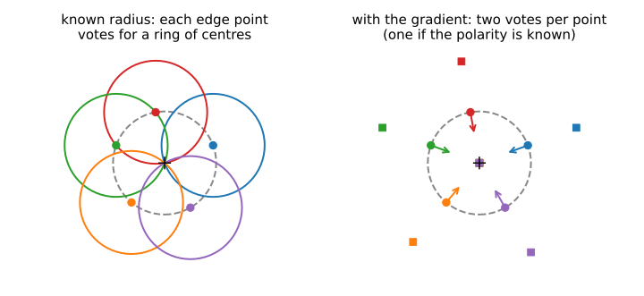
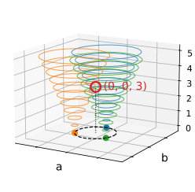
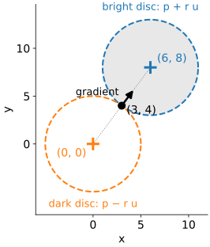
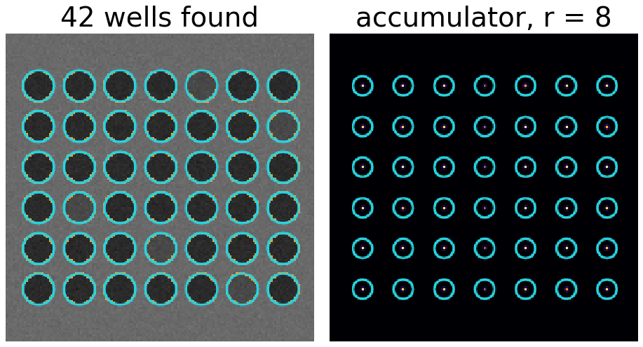
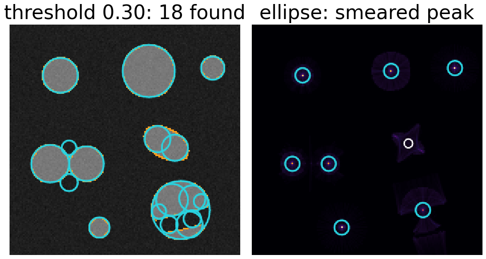
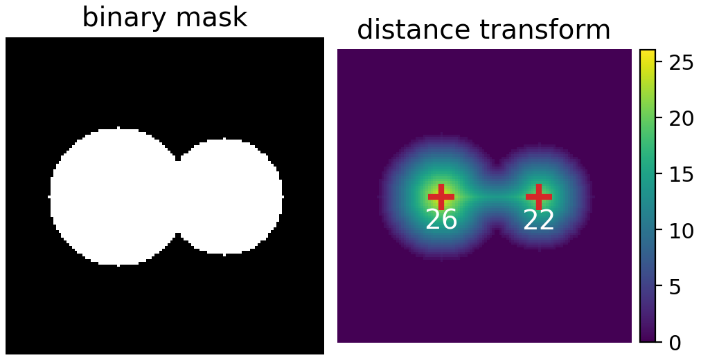
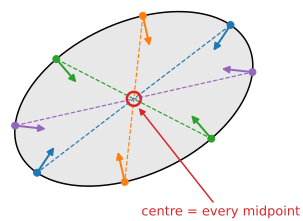

The line unit let every edge point vote for all lines through it. Circles work the same way, with one more parameter (Kimme, Ballard & Sklansky, 1975).
A circle has three parameters: centre (a, b) and radius r.
Known radius: every edge point votes for a ring of possible centres; the rings meet at the true centre.
Unknown radius: a 3D accumulator, and what each extra parameter costs.
The gradient direction points at the centre: two votes per radius instead of a whole ring.
Applications, failure modes, alternatives, and ellipses briefly.
Slides titled The math give the formulas and proofs; the ideas are complete without them.
Circles: three numbers
A circle is the set of points at distance r from a centre (a, b):
(x - a)^2 + (y - b)^2 = r^2.
Three parameters, so the parameter space is 3D: one axis for each of a, b, r.
An edge point (x, y) is on every circle whose centre is at distance r from it.
For a fixed r those centres form a circle of radius r around the edge point.
Known radius: rings of votes

Left: with a known radius, each edge point (dots) votes for all centres at distance r: a ring around it. All rings pass through the true centre (+). The accumulator is a 2D image of the same size as the input, with a peak at every centre.
Try it: circles of votes
The math: a ring-shaped kernel
With a known radius, the accumulator at a candidate centre \mathbf c counts the edge pixels at distance r:
with E the binary edge map and K_r a ring of radius r and width one pixel. This is a correlation of the edge map with a ring (a convolution, since the ring is symmetric): the kernels unit’s weighted sum, with a ring as the kernel (Filtering & convolution). The ring has about 2\pi r pixels (a digital ring slightly fewer: 56 for r = 10), so dividing by 2\pi r gives the fraction of the circumference that is present.
Unknown radius: a 3D accumulator
Repeat for every radius in a range: one (a, b) slice per radius, stacked into a 3D accumulator (a, b, r). Each edge point now votes for a cone of centres (rings growing with r).
A circle is a peak in 3D: the right centre and the right radius.
NMS in 3D: largest in a window in a, b and r.
Cost: a 256 × 256 image with 40 radii has 2.6 million bins. With 5000 edge points and radii 5 to 40, each point casts \sum 2\pi r \approx 5100 votes: about 25 million votes.
Every extra parameter multiplies the bins and the votes by the number of steps along it.

Each point votes on a cone; the cones meet at the circle.
The math: the cost of each parameter
With n steps per parameter and d parameters, the accumulator has n^d bins: lines n^2, circles n^3, ellipses n^5.
Full voting: each edge point votes along a (d-1)-dimensional surface of parameter space (a curve for lines, a cone for circles): O(n^{d-1}) votes per point.
Gradient voting fixes one more parameter per point: for circles, the gradient fixes the direction from the point to the centre, leaving only r free: O(n) votes per point instead of O(n^2).
Memory can be cut by keeping only a 2D centre map (votes summed over r), then estimating r per detected centre from a radius histogram of its edge points.
The gradient points at the centre
On a circle, the gradient of the image is radial: it points straight towards the centre, or straight away from it.
Bright disc on a dark background: the gradient points inward, the centre is at \mathbf p + r\,\mathbf u (\mathbf u the unit gradient).
Dark disc on a bright background: outward, the centre is at \mathbf p - r\,\mathbf u.
Unknown polarity: vote for both, two votes per radius. Known polarity: one.
Example: radius 5, edge point (3, 4), unit gradient (0.6, 0.8): candidate centres (3, 4) \pm 5\,(0.6, 0.8) = (6, 8) or (0, 0).
From 2\pi r votes per radius to 1 or 2: for radii 5 to 40, from about 5100 to 36 or 72 votes per point.

Try it: gradient voting and a range of radii
Applications
Nuclei, round cells, vesicles: bright or dark discs of a known range of radii. Gradient voting with the right polarity.
Colonies on an agar plate: many discs, different radii.
Wells of a multi-well plate: a known radius (one slice) and a regular grid. (Demo: “plate wells”: all 42 wells, dark on bright.)
Powder diffraction rings: concentric circles around a known centre. Then only r is unknown: the accumulator is a 1D histogram of radius at that centre. (Demo: “diffraction rings”: click the centre.)
A detected centre as the starting point of a boundary search in polar coordinates (the dynamic-programming elective).

Demo still: "plate wells".
When circles go wrong
Not quite circles: an ellipse or an irregular cell has no single centre. Its votes smear over several centres and radii; the peak is low and wide. (Demo: “ellipse”.)
Touching or overlapping cells: a shared or missing boundary removes votes from both; parts of two circles can add up to a weak extra peak.
Low threshold: any curved piece of boundary has a centre of curvature and collects some votes there. (Demo: “low threshold: false circles”: the ellipse gives two false circles of radius 9 near its ends.)
Wrong radius range: a circle outside the range is never found; a range that is too wide costs time and invites false peaks.
Strong straight edges nearby: their votes form bright lines in the accumulator.

Demo stills: "low threshold" and "ellipse".
Alternatives for round objects
Distance transform peaks (the morphology day): from a binary mask, the centre of a disc is the pixel farthest from the background; touching discs give two peaks. They also make markers for the watershed (the watershed day).
Blob detection with the Laplacian of Gaussian at scale \sigma \approx r/\sqrt2 (the edges day): a region-based cousin that uses the inside of the disc, not its edge.
Circle Hough: works on edges, tolerates gaps and partial occlusion, and gives the radius.

Two touching discs: one distance-transform peak each.
Ellipses, briefly
An ellipse needs five parameters: centre (2), the two semi-axes (2) and an angle (1). A full 5D accumulator is impractical: with 50 steps per parameter that is 312 million bins.
Two ways out:
Find the centre first: two edge points with parallel gradients on an ellipse lie symmetrically about its centre; their midpoints vote for the centre in 2D. Then find the remaining three parameters.
Hypothesise and verify: fit an ellipse to 5 random edge points and count how many others agree (the RANSAC unit).

The math: conics have five degrees of freedom
Every ellipse (and every conic) is the zero set of a quadratic:
A x^2 + B xy + C y^2 + D x + E y + F = 0, \qquad B^2 - 4AC < 0 \text{ for an ellipse}.
Six coefficients, but multiplying all of them by the same non-zero number gives the same curve: 5 degrees of freedom, so five points in general position determine a conic (one linear equation per point, a 5 \times 6 system with a one-dimensional null space). A circle is the special case B = 0, A = C: three degrees of freedom, as in (a, b, r).
Summary
A circle has 3 parameters; an edge point votes for a ring of centres per radius (a cone over all radii).
Known radius: a 2D accumulator, the edge map correlated with a ring.
Unknown radius: 3D, and the cost grows with every parameter.
The gradient points at the centre: 1 or 2 votes per radius, depending on whether the polarity is known.
Watch for non-circular objects, touching objects, the radius range and the threshold.
Ellipses (5 parameters) need the centre first, or hypothesise-and-verify.